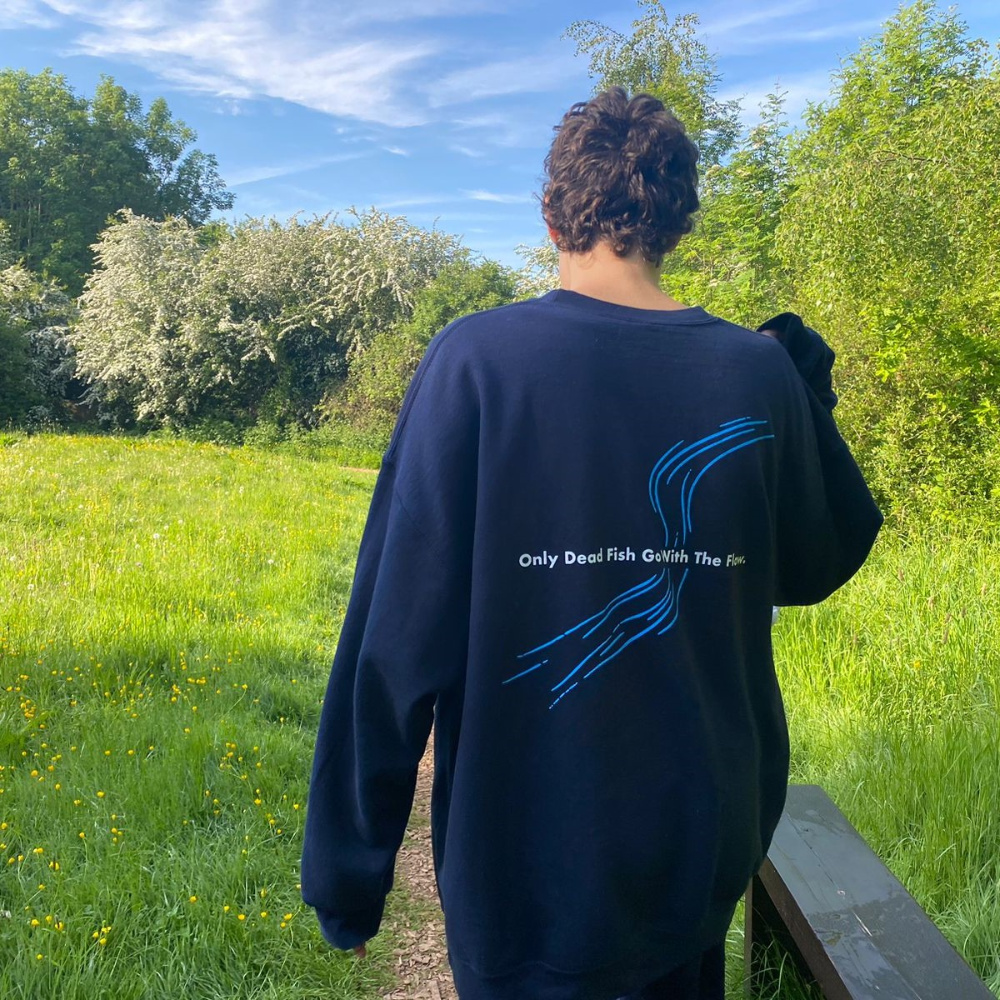
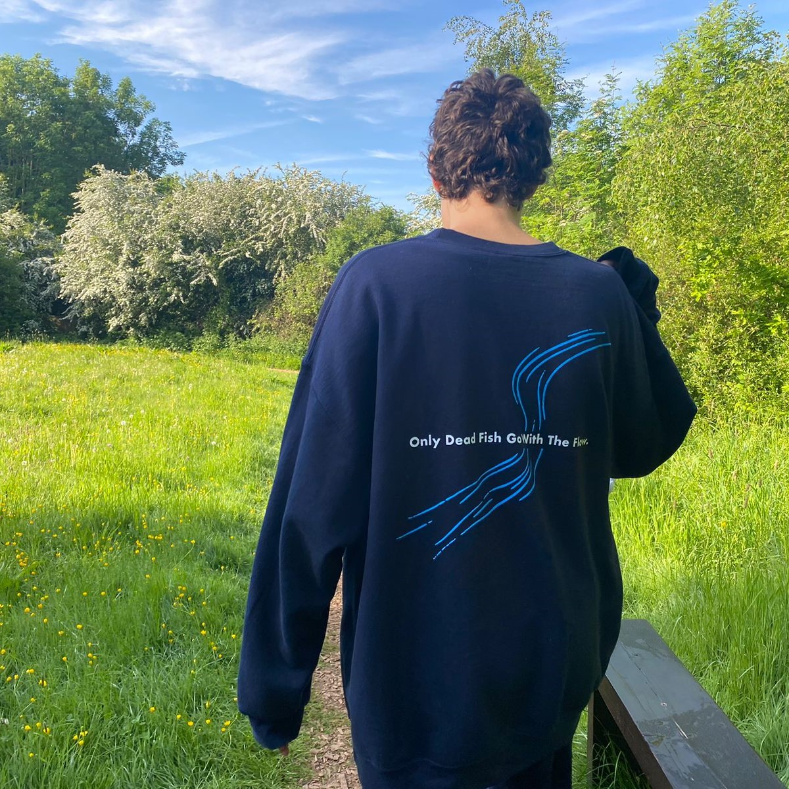
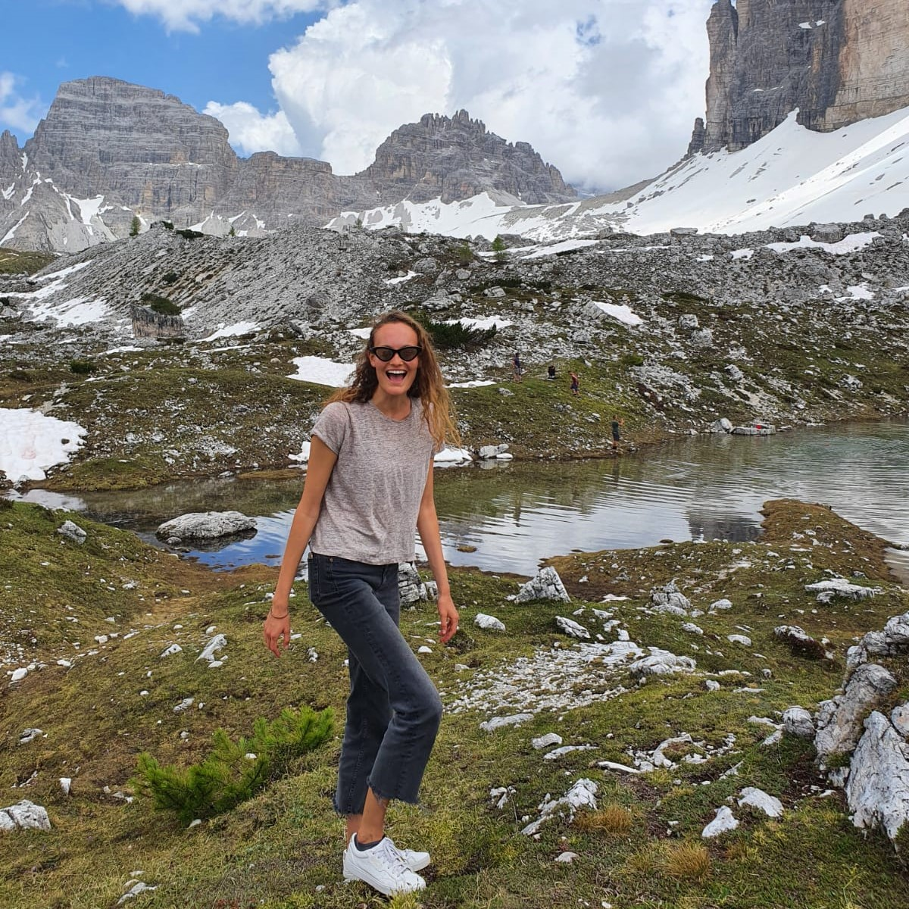
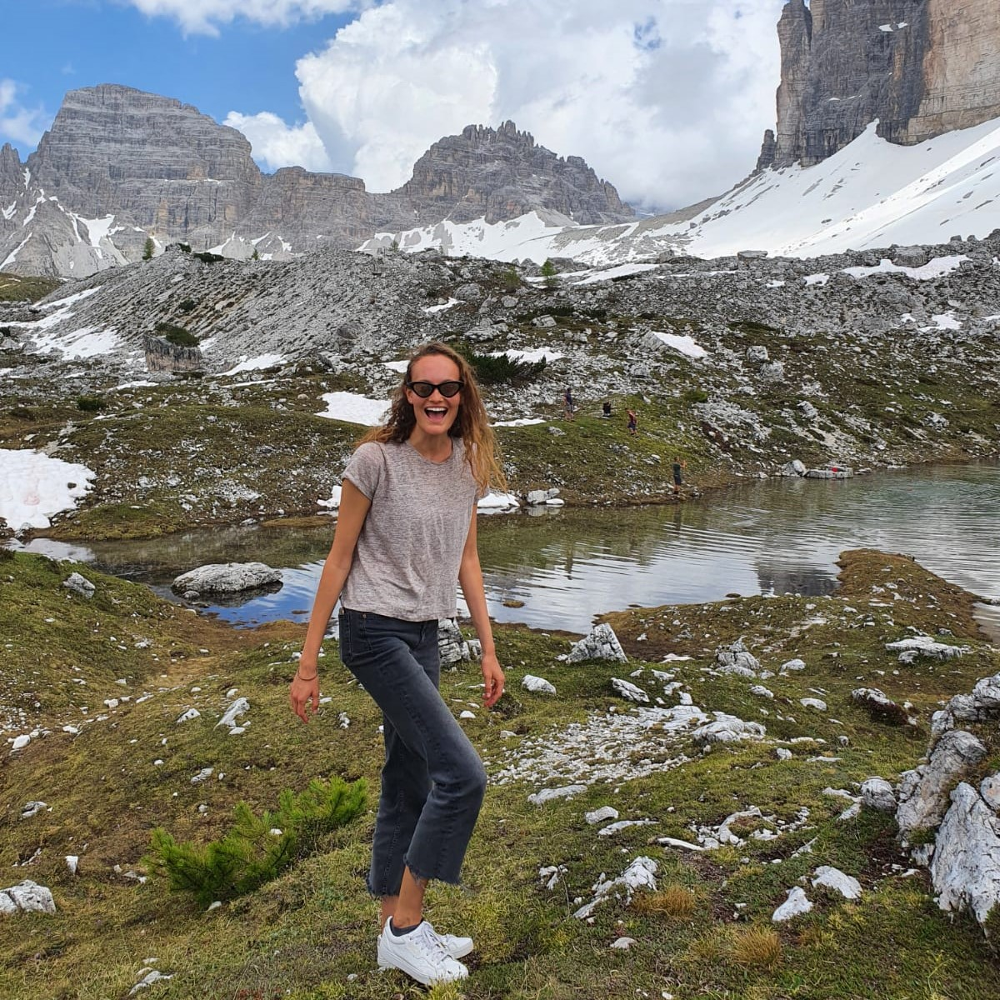
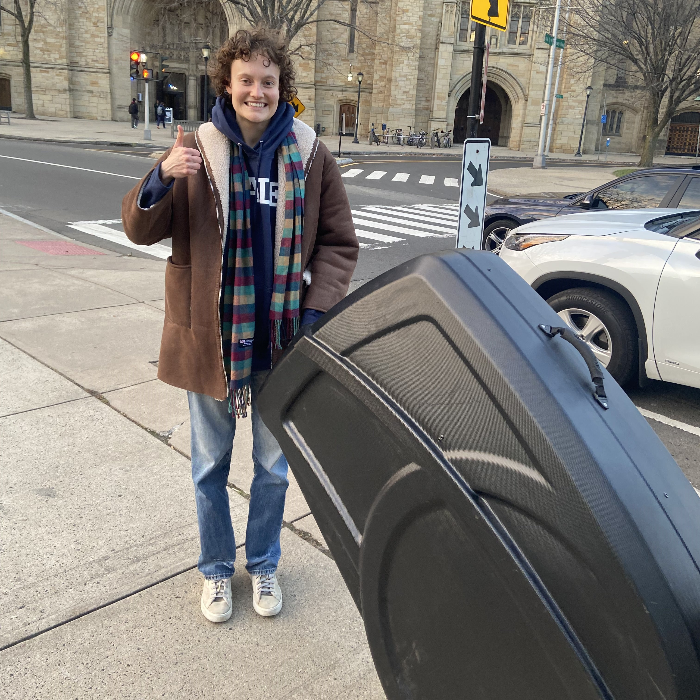
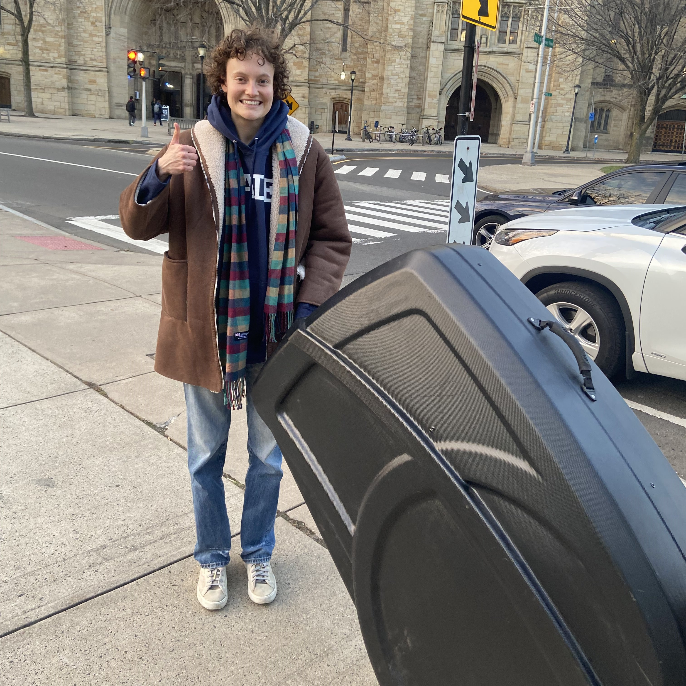

Hi! I make BCIs and do endurance sports.
My long term ambition is to build perfect empathy: a way to literally feel what someone else is feeling.
I got into endurance sport because doctors told me I wouldn't be able to run (I have a congenital heart defect).
In 8 months I went from nothing to earning myself a spot at Ironman World Championships (0.0006% qualification rate) where I will be racing in Kona, Hawaii, on October 14th, 2025. I'm also racing Ironman Lake Placid (July) and running 24h for my 24th birthday (November).
In past lives, I grew the Yale Entrepreneurial Society from 30 to 400+ members, was a Partner at Dorm Room Fund, co-founded Crew Dog, did epigenetics research at the Ahuja Lab, worked for Models1 and took care of the chickens on the Yale Farm.
I speak 6 languages, have lived in 7 countries, and love all things adrenaline.
Only dead fish go with the flow.
 

 

Projects:

Built focused ultrasound stimulation and neuronavigation systems. Ran acoustic and thermal simulations on k wave (Matlab), used 3D Slicer and NDI 6D Architect for optics.

Developed a 400 element, 12 layer, PZT thin film piezoelectric micromachined ultrasound transducer (pMUT). Reverse engineered KLayout with Python.


Made energy bars made from organ meat by working at a butcher and testing recipes in a shared student kitchen (would literally spend hours dehydrating and pulverizing beef heart & liver to mix with tallow & spices).


Grew mycelium (the root network of fungus) in my room as a sustainable building material, with free leftover coffee grounds from Donut Crazy to use as a substrate.
Launched a campaign signed by 1600+ people petitioning Yale to rebuild the sauna.
 

I also shaved my head as a social experiment, only listen to hardcore EDM, regularly polar plunge, and in general pursue the extremes of the human experience.